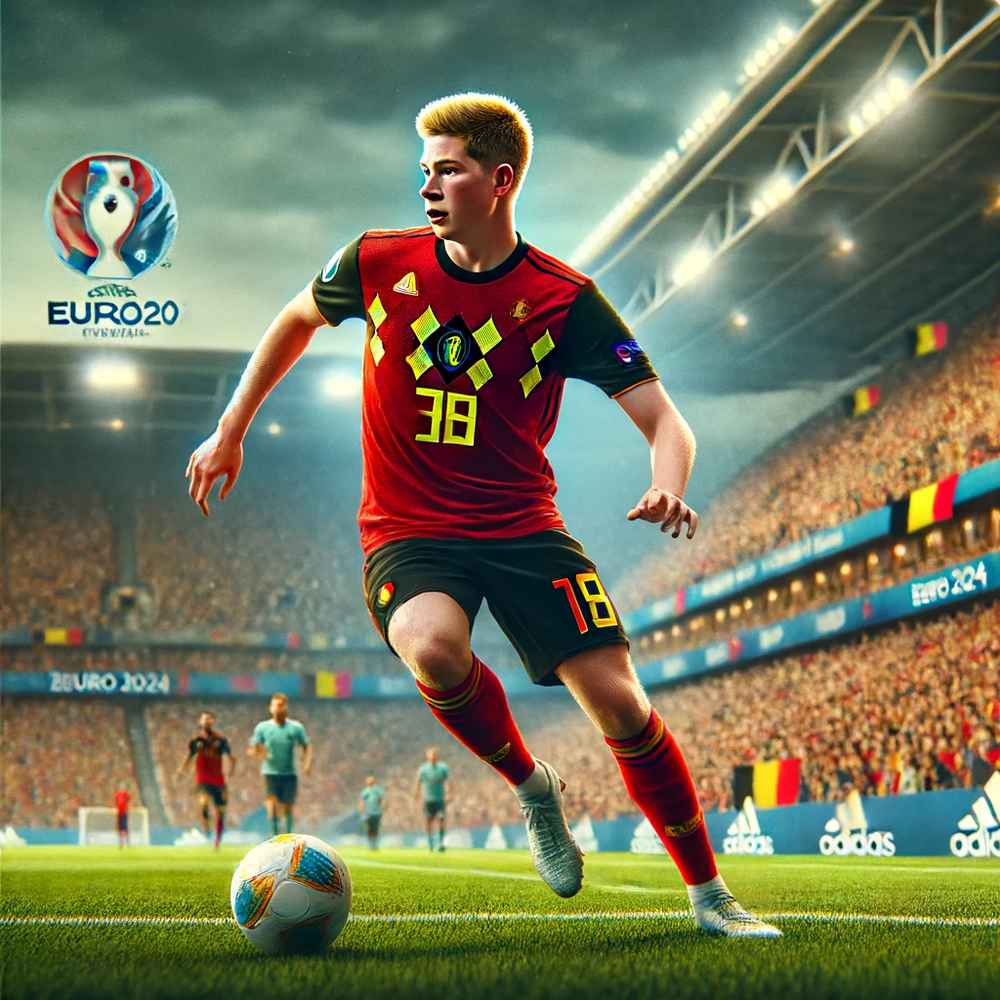
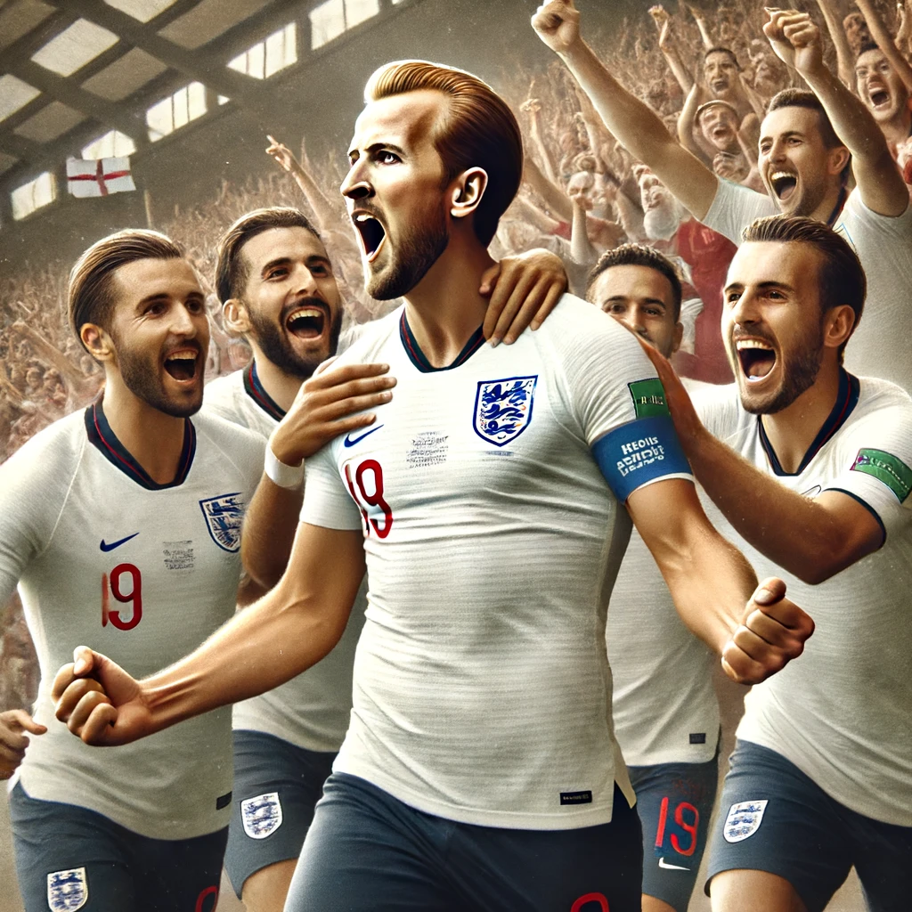

Premier League Players to Watch in the Euros 2024
1. Kevin De Bruyne (Belgium, Manchester City)
A midfield maestro, De Bruyne's vision, passing accuracy, and ability to control the game will be crucial for Belgium. After a stellar season with Manchester City, he is expected to be one of the standout performers at the tournament.
2. Harry Kane (England, Tottenham Hotspur)
England's captain and primary goal threat, Harry Kane's clinical finishing and leadership will be pivotal for England's campaign. His ability to score and assist makes him a complete forward to watch.
3. Ruben Dias (Portugal, Manchester City)
A rock at the back for both club and country, Dias's defensive prowess and aerial ability will be essential for Portugal's defense. His performances could be key in Portugal's quest for glory.
4. Bukayo Saka (England, Arsenal)
The young winger has been a revelation for Arsenal, and his pace, creativity, and versatility will be vital for England. Saka's ability to play on both wings adds a dynamic element to England's attack.
5. Bruno Fernandes (Portugal, Manchester United)
Fernandes's creativity, vision, and set-piece expertise make him a crucial player for Portugal. His ability to link up play and score from midfield positions will be integral to Portugal's success.
6. Declan Rice (England, Arsenal)
A commanding presence in midfield, Rice's tackling, interception, and ability to break up play provide England with a solid defensive foundation. His role will be critical in shielding the defense and initiating attacks.
7. Joao Cancelo (Portugal, Manchester City)
Cancelo's versatility to play both as a right-back and left-back, combined with his attacking prowess, makes him a valuable asset. His overlapping runs and defensive capabilities will be key for Portugal.
8. Marcus Rashford (England, Manchester United)
Known for his speed and ability to score crucial goals, Rashford will be a significant threat in England's attacking lineup. His dribbling and finishing skills will be vital in breaking down tough defenses.
9. Phil Foden (England, Manchester City)
Foden's dribbling, vision, and creativity make him one of England's most exciting young talents. His ability to play across the front line provides England with tactical flexibility.
10. Martin Odegaard (Norway, Arsenal)
Although Norway is not a traditional football powerhouse, Odegaard's vision, passing, and leadership as a playmaker will be crucial for their performance in the tournament.